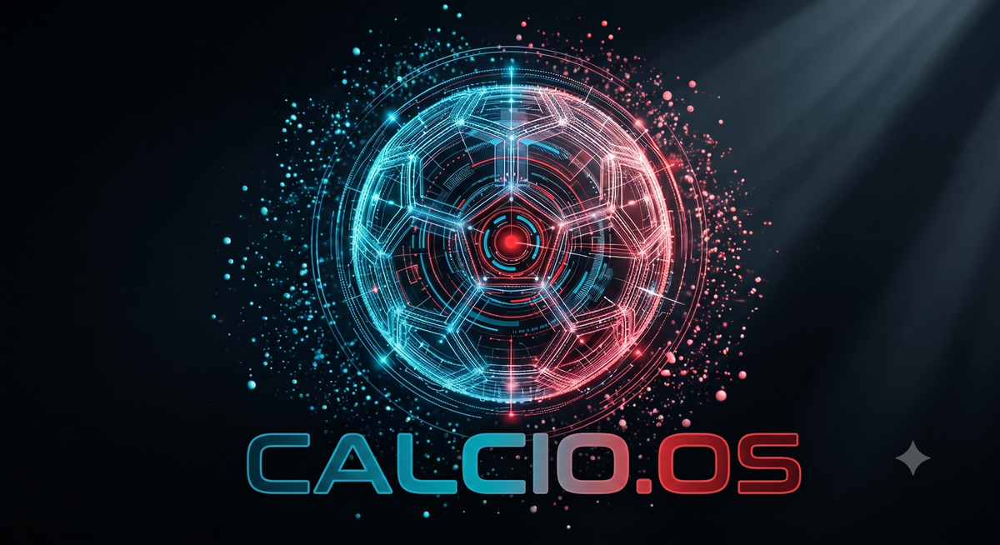

Il marchio CALCIO.OS.
L'essenziale per usare il marchio correttamente: logo, colori, tipografia, voce. Per usi stampa o partnership scrivici.
Logo

Primario (logomark + wordmark) — copertine, header, materiali ufficiali

Logomark — favicon, avatar, badge e scale piccole
- Non distorcere, non ruotare, non ricolorare.
- Lascia respiro: spazio di rispetto pari all'altezza della «C» su ogni lato.
- Su fondi scuri usa la versione con logomark trasparente.
{kind=link}
Colori
Cyan · primario#06A8B5
Red · accento#D62828
Ink · testo/dark#0F172A
Mist · sfondo#F4F6F9
Il cyan guida, il rosso accenta (mai testi lunghi in rosso). Le interfacce di prodotto sono a base chiara; il dark è riservato a hero e momenti di stacco.
Tipografia
Space Grotesk — titoli e display
Inter — testi, interfacce e didascalie. Mono (JetBrains Mono) solo per kicker ed etichette tecniche.
Voce e tagline
«Aiutiamo accademie e famiglie a far crescere i ragazzi. Sul campo e oltre.»
Subline: Il sistema operativo del calcio italiano.
- Diciamo solo cose vere: ciò che non c'è ancora è «in arrivo», mai presentato come esistente.
- Italiano semplice, rispettoso di mister e famiglie. Mai gergo tecnico verso gli utenti.
- Il bambino al centro: misuriamo la crescita, non il voto.